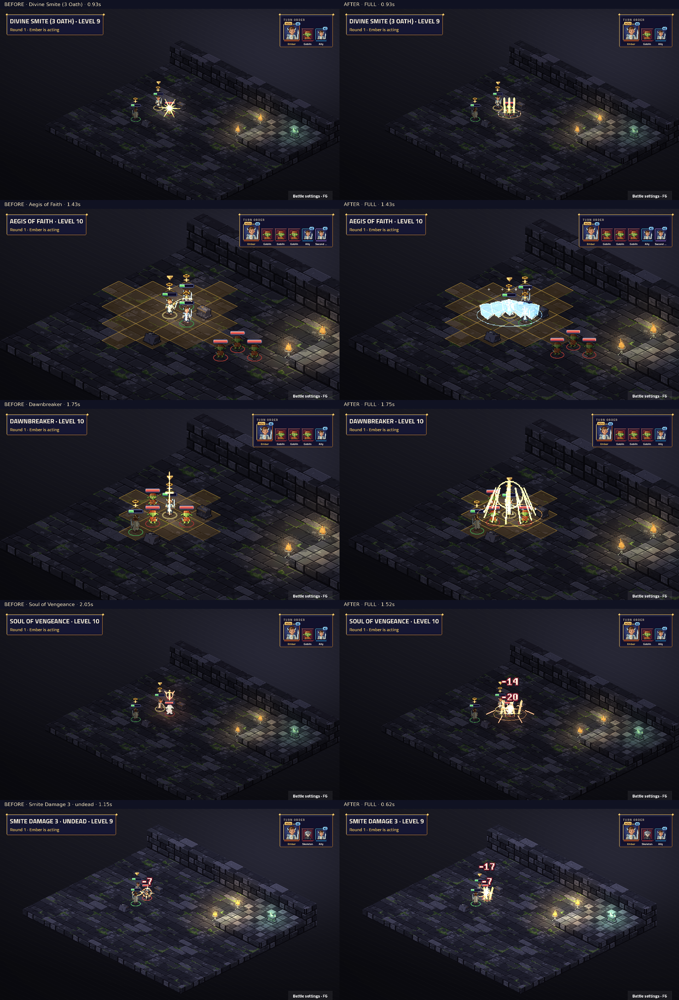

Attack · Level 1
Weapon attack, weapon range: weapon damage
Smite progression and the real undead rider · Three oath signatures · Guardian reaction, aura and enchanted weapon
Native TV capture: before on the left, after on the right. Fixed map and seed; real engine events and BeatPlayer. Level labels are the character’s unlock level. Videos preserve the complete cast, impact, effect tails and camera settle. Posters align the impact for comparison.
Frozen before: d6c216bfbe7db4e7f043ac3cebae59c6700ae92c. Review notes and limitations · Frame measurements · Actual beat timings
Complete 37-sample contact sheet · Native cast close-up

Static modifiers have no standalone proc. Every ability and visible proc must have a real fixture for this capture to succeed.
| Name | Subclass | Level | Kind | Cut-in | Before keys | After keys |
|---|---|---|---|---|---|---|
| Bless | Base class | 1 | ability | short | characters.pray · fx.bless.gold | characters.paladin_oath · fx.paladin_bless.gold |
| Command | Base class | 1 | ability | short | characters.pray · fx.hold.holy | characters.paladin_judgement · fx.paladin_command.holy |
| Compelled Duel | Base class | 1 | ability | short | characters.pray · fx.hold.holy | characters.paladin_judgement · fx.paladin_compelled_duel.gold |
| Cure Wounds | Base class | 1 | ability | short | characters.pray · fx.heal.holy | characters.paladin_mercy · fx.paladin_cure_wounds.holy |
| Lay on Hands | Base class | 1 | ability | short | characters.pray · fx.heal.holy | characters.paladin_mercy · fx.paladin_lay_on_hands.holy |
| Shield of Faith | Base class | 1 | ability | short | characters.pray · fx.ward.holy | characters.paladin_guard · fx.paladin_shield_of_faith.azure |
| Style Defense | Base class | 2 | static | none | No art key | No art key |
| Style Dueling | Base class | 2 | static | none | No art key | No art key |
| Style Great Weapon | Base class | 2 | static | none | No art key | No art key |
| Divine Smite | Base class | 2 | ability | short | characters.ready · fx.radiant.dawn | characters.paladin_oath · fx.paladin_divine_smite.gold |
| Smite Damage | Base class | 2 | proc | none | No art key | fx.paladin_smite_hit.gold |
| Aid | Base class | 5 | ability | short | characters.pray · fx.bless.gold | characters.paladin_oath · fx.paladin_aid.gold |
| Divine Smite (2 Oath) | Base class | 5 | ability | short | characters.ready · fx.radiant.dawn | characters.paladin_oath · fx.paladin_divine_smite_2.gold |
| Lesser Restoration | Base class | 5 | ability | short | characters.pray · fx.restore.holy | characters.paladin_mercy · fx.paladin_lesser_restoration.holy |
| Smite Damage 2 | Base class | 5 | proc | none | No art key | fx.paladin_smite_hit_2.gold |
| Aura Of Protection | Base class | 6 | proc | none | No art key | fx.paladin_aura_refresh.azure |
| Aura Of Protection Start | Base class | 6 | proc | none | No art key | fx.paladin_aura_start.azure |
| Dispel Magic | Base class | 9 | ability | short | characters.pray · fx.dispel.arcane | characters.paladin_judgement · fx.paladin_dispel_magic.arcane |
| Divine Smite (3 Oath) | Base class | 9 | ability | short | characters.ready · fx.radiant.dawn | characters.paladin_oath · fx.paladin_divine_smite_3.gold |
| Elemental Weapon | Base class | 9 | ability | short | characters.pray · fx.aura.fire | characters.paladin_oath · fx.paladin_elemental_weapon.fire |
| Smite Damage 3 | Base class | 9 | proc | none | No art key | fx.paladin_smite_hit_3.gold |
| Abjure Enemy | paladin.avenger | 3 | ability | full | characters.cast · signature.avenger_vengeance_brand.ember | characters.paladin_judgement · fx.paladin_abjure_enemy.ember |
| Vow of Enmity | paladin.avenger | 3 | ability | full | characters.point · signature.avenger_vengeance_brand.ember | characters.paladin_judgement · fx.paladin_vow_of_enmity.ember |
| Relentless Step | paladin.avenger | 6 | ability | full | characters.jump · signature.avenger_vengeance_brand.ember | characters.paladin_judgement · fx.paladin_relentless_step.ember |
| Vengeful Strikes | paladin.avenger | 6 | proc | none | No art key | fx.paladin_vengeful_strikes.ember |
| Soul of Vengeance | paladin.avenger | 10 | ability | full | characters.slam · signature.avenger_vengeance_brand.ember | characters.paladin_strike · fx.paladin_soul_of_vengeance.ember |
| Radiant Blades | paladin.crusader | 3 | proc | none | No art key | fx.paladin_radiant_blades.holy |
| Searing Smite | paladin.crusader | 3 | ability | full | characters.slam · signature.crusader_smite.radiant | characters.paladin_strike · fx.paladin_searing_smite.fire |
| Consecrated Ground · OnTurnStart | paladin.crusader | 6 | proc | none | No art key | fx.paladin_consecrated_tick.holy |
| Consecrated Ground | paladin.crusader | 6 | ability | full | characters.slam · signature.crusader_smite.radiant | characters.paladin_judgement · fx.paladin_consecrated_ground.gold |
| Dawnbreaker | paladin.crusader | 10 | ability | full | characters.pray · signature.crusader_smite.radiant | characters.paladin_judgement · fx.paladin_dawnbreaker.holy |
| Righteous Challenge | paladin.guardian | 3 | ability | full | characters.summon · signature.guardian_bulwark.holy | characters.paladin_judgement · fx.paladin_righteous_challenge.gold |
| Sanctuary Aegis | paladin.guardian | 3 | ability | full | characters.block · signature.guardian_bulwark.azure | characters.paladin_guard · fx.paladin_sanctuary_aegis.azure |
| Divine Ward | paladin.guardian | 6 | ability | none | characters.block · signature.guardian_bulwark.azure | characters.paladin_guard · fx.paladin_divine_intervention.azure |
| Steadfast | paladin.guardian | 6 | static | none | No art key | No art key |
| Aegis of Faith | paladin.guardian | 10 | ability | full | characters.summon · signature.guardian_bulwark.holy | characters.paladin_guard · fx.paladin_aegis_of_faith.azure |
Weapon attack, weapon range: weapon damage
4 tiles, burst 1: target gets +2 to attack rolls and +2 Str saves and +2 Dex saves and +2 Con saves and +2 Int saves and +2 Wis saves and +2 Cha saves for 10 rounds
Wis save, 6 tiles: target is Incapacitated for 1 round — "Halt!" The target stands still and does nothing on its next turn.
Wis save, 4 tiles: taunts target for 10 rounds
1 tile: heals 2d8 + casting modifier
1 tile: heals 5 — Your healing pool holds 5 HP per paladin level each battle; each touch draws 5 of them.
6 tiles: target gets +2 AC for 10 rounds
1 tile: target is Marked for Smiting for 1 round — Your next melee hit on the target before the end of your next turn deals an extra 2d8 radiant (3d8 against undead and fiends).
Visible passive triggered during Attack; fixture seed 7. Weapon attack, weapon range: weapon damage
4 tiles, burst 1: target gains 5 temporary HP
1 tile: target is Marked for Smiting (2 Oath) for 1 round — Your next melee hit on the target before the end of your next turn deals an extra 3d8 radiant (4d8 against undead and fiends).
1 tile: ends poison conditions on target; ends Blinded on target; ends Paralysed on target
Visible passive triggered during Attack; fixture seed 7. Weapon attack, weapon range: weapon damage
Weapon attack, weapon range: weapon damage
Real OnBattleStart hook; fixture seed 7.
6 tiles: ends concentration; ends magical conditions on target
1 tile: target is Marked for Smiting (3 Oath) for 1 round — Your next melee hit on the target before the end of your next turn deals an extra 4d8 radiant (5d8 against undead and fiends).
Self: you are Wielding an Elemental Weapon — Your weapon blazes with elemental power: +1 to hit and +2 damage while you concentrate.
Visible passive triggered during Attack; fixture seed 7. Weapon attack, weapon range: weapon damage
Avenger: Wis save, 6 tiles: target is Frightened for 2 rounds; target is Slowed for 2 rounds; on a save, target is Slowed for 1 round
Avenger: 4 tiles: marks target for 3 rounds (your attacks on it have advantage) — You swear a vow of enmity against one foe.
Avenger: 5 tiles: teleports you to the aimed tile, up to 5 tiles away
Avenger: Visible passive triggered during Attack; fixture seed 7. Weapon attack, weapon range: weapon damage
Avenger: Weapon range: marks target for 3 rounds (your attacks on it have advantage); weapon attack (weapon damage + 3d8; 2d8 radiant). With more than one attack, these bonuses and riders apply until the first hit; the rest are plain hits
Crusader: Visible passive triggered during Attack; fixture seed 7. Weapon attack, weapon range: weapon damage
Crusader: Weapon attack, weapon range: weapon damage; 2d6 radiant; target is Burning for 2 rounds. With more than one attack, these bonuses and riders apply until the first hit; the rest are plain hits
Crusader: Real engine zone turn-start hook.
Crusader: Con save, self, burst 2: 3d8 radiant; half damage on a save; creates a holy zone (burst 2) for 2 rounds; units inside: At the start of your turn, on yourself: heals 1d6
Crusader: Con save, self, burst 2: 5d8 radiant; target is Blinded for 1 round; half damage on a save
Guardian: Wis save, self, burst 2: taunts target for 1 round
Guardian: 4 tiles: target gains 1d8 + casting modifier temporary HP; target gets +2 AC for 2 rounds
Guardian: Real reaction to Attack; fixture seed 10.
Guardian: 0 tiles, burst 3: target gains 3d8 + level temporary HP; target gets +2 AC and resists bludgeoning, piercing, slashing for 2 rounds
Visible passive triggered during Attack; fixture seed 7. Weapon attack, weapon range: weapon damage
Visible passive triggered during Attack; fixture seed 7. Weapon attack, weapon range: weapon damage
Visible passive triggered during Attack; fixture seed 7. Weapon attack, weapon range: weapon damage
Real attack while the actual weapon enchantment remains active.